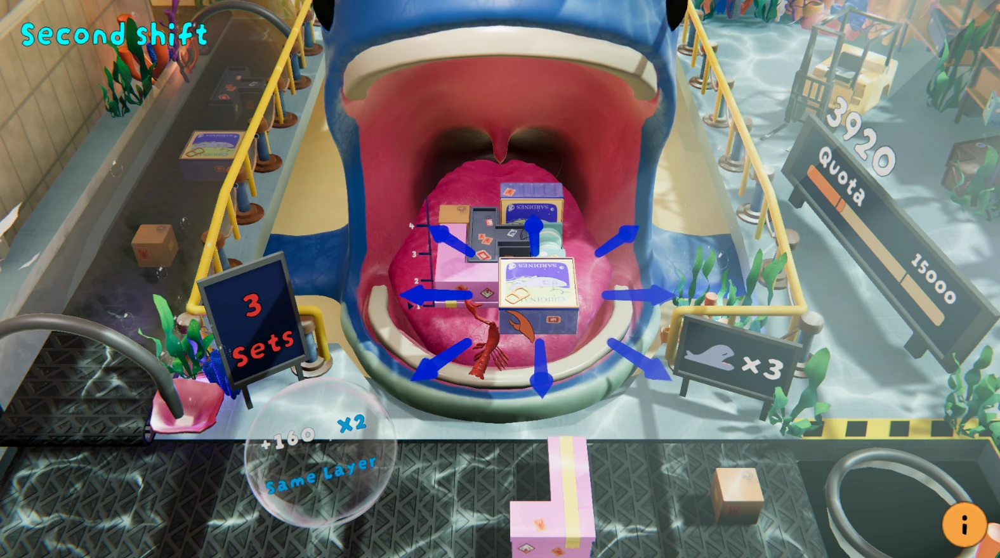
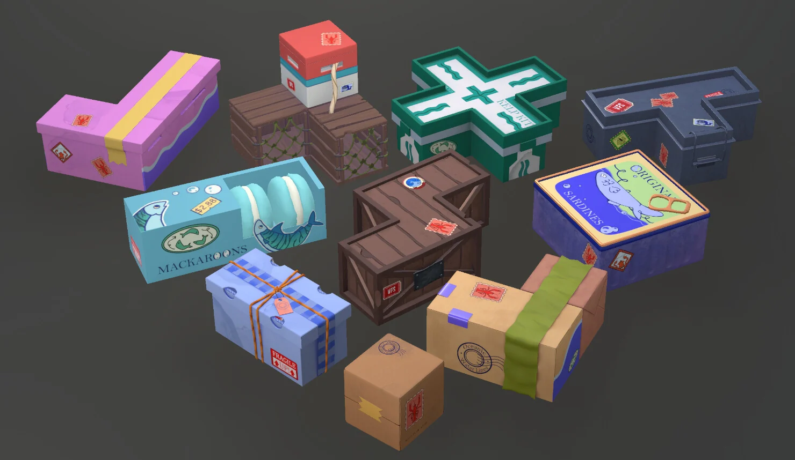
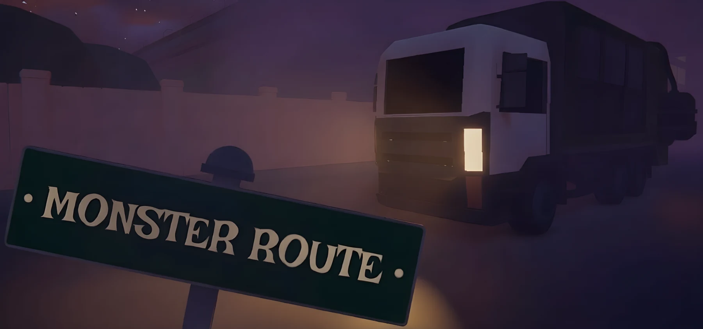

Current work
2026
Yoolmi
I’m currently working on UX/UI for a child-friendly Mexican Sign Language learning app. It’s still changing, so I’m showing selected interface work instead of pretending it’s a finished case study.
UX/UI and interaction are the core of my portfolio. Games, 3D and work in progress show the wider production background I bring to design. Filter by whatever you’re here to see.

A responsive e-commerce site for a Chiapas social enterprise, built around a simple question: how do you make buying easy without losing the story behind the product?

A six-month 3D puzzle game shaped through playtesting. We simplified controls, made scoring easier to read and kept adding feedback until the interactions felt right.
I’m currently working on UX/UI for a child-friendly Mexican Sign Language learning app. It’s still changing, so I’m showing selected interface work instead of pretending it’s a finished case study.

Game-ready modeling, material studies and hard-surface work. It’s supporting work, but it shows how comfortable I am inside a production pipeline.

A 3D first-person action game where I worked as Project Manager, UI designer and 3D artist. My contribution crossed production, interface work and asset creation.
Playable builds and smaller game projects that are better experienced than over-explained.
No projects in this category yet.
As new projects become portfolio-ready, I can drop them into the right filters without turning the site into a pile of unrelated pages.